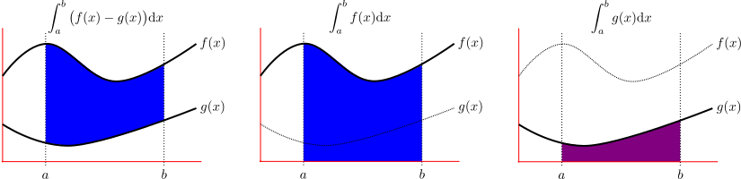
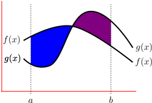
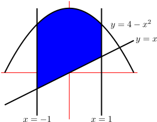
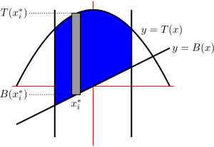
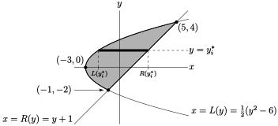
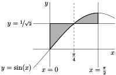

Subsection 1.5.1 Area between curves
Before we continue our exploration of different methods for integrating functions, we have now have sufficient tools to examine some simple applications of definite integrals. One of the motivations for our definition of “integral” was the problem of finding the area between some curve and the \(x\)-axis for \(x\) running between two specified values. More precisely
\begin{gather*}
\int_a^b f(x) \dee{x}
\end{gather*}
is equal to the signed area between the the curve \(y=f(x)\text{,}\) the \(x\)-axis, and the vertical lines \(x=a\) and \(x=b\text{.}\)
We found the area of this region by approximating it by the union of tall thin rectangles, and then found the exact area by taking the limit as the width of the approximating rectangles went to zero. We can use the same strategy to find areas of more complicated regions in the \(xy\)-plane.
As a preview of the material to come, let \(f(x) \gt g(x) \gt 0\) and \(a \lt b\) and suppose that we are interested in the area of the region
\begin{gather*}
S_1=\big\{\ (x,y)\ \big|\ a\le x\le b\,,\, g(x)\le y\le f(x)\ \big\}
\end{gather*}
that is sketched in the left hand figure below.

We already know that \(\int_a^b f(x)\,\dee{x}\) is the area of the region
\begin{gather*}
S_2=\big\{\ (x,y)\ \big|\ a\le x\le b\,,\, 0\le y\le f(x)\ \big\}
\end{gather*}
sketched in the middle figure above and that \(\int_a^b g(x)\,\dee{x}\) is the area of the region
\begin{gather*}
S_3=\big\{\ (x,y)\ \big|\ a\le x\le b\,,\, 0\le y\le g(x)\ \big\}
\end{gather*}
sketched in the right hand figure above. Now the region \(S_1\) of the left hand figure can be constructed by taking the region \(S_2\) of center figure and removing from it the region \(S_3\) of the right hand figure. So the area of \(S_1\) is exactly
\begin{align*}
\int_a^b f(x)\,\dee{x} - \int_a^b g(x)\,\dee{x}
&= \int_a^b \big(f(x)-g(x)\big)\,\dee{x}
\end{align*}
This computation depended on the assumption that \(f(x) \gt g(x)\) and, in particular, that the curves \(y=g(x)\) and \(y=f(x)\) did not cross. If they do cross, as in this figure

then we have to be a lot more careful. The idea is to separate the domain of integration depending on where \(f(x) - g(x)\) changes sign — i.e. where the curves intersect. We will illustrate this in Example 1.5.5 below.
Let us start with an example that makes the link to Riemann sums and definite integrals quite explicit.
Find the area bounded by the curves \(y=4-x^2\text{,}\) \(y=x\text{,}\) \(x=-1\) and \(x=1\text{.}\)
Solution:
-
Before we do any calculus, it is a very good idea to make a sketch of the area in question. The curves \(y=x\text{,}\) \(x=-1\) and \(x=1\) are all straight lines, while the curve \(y=4-x^2\) is a parabola whose apex is at \((0,4)\) and then curves down (because of the minus sign in \(-x^2\)) with \(x\)-intercepts at \((\pm2,0)\text{.}\) Putting these together gives
Notice that the curves \(y=4-x^2\) and \(y=x\) intersect when \(4-x^2=x\text{,}\) namely when \(x= \frac{1}{2}\left(-1\pm\sqrt{17}\right) \approx 1.56,-2.56\text{.}\) Hence the curve \(y=4-x^2\) lies above the line \(y=x\) for all \(-1\le x\le 1\text{.}\)
- We are to find the area of the shaded region. Each point \((x,y)\) in this shaded region has \(-1\le x\le 1\) and \(x \le y \le 4-x^2\text{.}\) When we were defining the integral (way back in Definition 1.1.9) we used \(a\) and \(b\) to denote the smallest and largest allowed values of \(x\text{;}\) let's do that here too. Let's also use \(B(x)\) to denote the bottom curve (i.e. to denote the smallest allowed value of \(y\) for a given \(x\)) and use \(T(x)\) to denote the top curve (i.e. to denote the largest allowed value of \(y\) for a given \(x\)). So in this example\begin{align*} a=-1&& b=1&& B(x)=x&& T(x)=4-x^2 \end{align*}and the shaded region is\begin{gather*} \big\{\ (x,y)\ \big|\ a\le x\le b,\ B(x)\le y\le T(x)\ \big\} \end{gather*}
-
We use the same strategy as we used when defining the integral in Section 1.1.4:
- Pick a natural number \(n\) (that we will later send to infinity), then
- subdivide the region into \(n\) narrow slices, each of width \(\De x=\frac{b-a}{n}\text{.}\)
- For each \(i=1,2,\cdots,n\text{,}\) slice number \(i\) runs from \(x=x_{i-1}\) to \(x=x_i\text{,}\) and we approximate its area by the area of a rectangle. We pick a number \(x_i^*\) between \(x_{i-1}\) and \(x_i\) and approximate the slice by a rectangle whose top is at \(y=T(x_i^*)\) and whose bottom is at \(y=B(x_i^*)\text{.}\)
- Thus the area of slice \(i\) is approximately \(\big[T(x_i^*)-B(x_i^*)\big]\De x\) (as shown in the figure below).
 - So the Riemann sum approximation of the area is\begin{align*} \text{Area} &\approx \sum_{i=1}^n \big[T(x_i^*)-B(x_i^*)\big]\De x \end{align*}
- By taking the limit as \(n \to \infty\) (i.e. taking the limit as the width of the rectangles goes to zero), we convert the Riemann sum into a definite integral (see Definition 1.1.9) and at the same time our approximation of the area becomes the exact area:\begin{align*} \lim_{n\rightarrow\infty}\sum_{i=1}^n \big[T(x_i^*)-B(x_i^*)\big]\De x &=\int_a^b \big[T(x)-B(x)\big]\dee{x} \\ &\hskip1in \text{Riemann sum $\to$ integral}\\ &=\int_{-1}^1\big[(4-x^2)-x\big]\dee{x}\\ &=\int_{-1}^1\big[4-x-x^2\big]\dee{x}\\ &=\bigg[4x - \frac{x^2}{2} - \frac{x^3}{3} \bigg]_{-1}^1\\ &= \left(4 - \frac{1}{2}-\frac{1}{3} \right) - \left(-4-\frac{1}{2}+\frac{1}{3} \right)\\ &= \frac{24-3-2}{6} - \frac{-24-3+2}{6}\\ &= \frac{19}{6} + \frac{25}{6}\\ &= \frac{44}{6} = \frac{22}{3}. \end{align*}
Oof! Thankfully we generally do not need to go through the Riemann sum steps to get to the answer. Usually, provided we are careful to check where curves intersect and which curve lies above which, we can just jump straight to the integral
\begin{equation*}
\text{Area} = \int_a^b \big[T(x)-B(x)\big]\dee{x}.
\end{equation*}
So let us redo the above example.
Example 1.5.2 Example 1.5.1 revisited
Find the area bounded by the curves \(y=4-x^2\text{,}\) \(y=x\text{,}\) \(x=-1\) and \(x=1\text{.}\)
Solution:
-
We first sketch the region
and verify 1 We should do this by checking where the curves intersect; that is by solving \(T(x)=B(x)\) and seeing if any of the solutions lie in the range \(-1\leq x \leq 1\text{.}\) that \(y=T(x)=4-x^2\) lies above the curve \(y=B(x)=x\) on the region \(-1\leq x\leq 1\text{.}\)
- The area between the curves is then\begin{align*} \text{Area} &= \int_a^b \big[T(x)-B(x)\big]\dee{x}\\ &=\int_{-1}^1\big[4-x-x^2\big]\dee{x}\\ &=\bigg[4x - \frac{x^2}{2} - \frac{x^3}{3} \bigg]_{-1}^1\\ &= \frac{19}{6} + \frac{25}{6} = \frac{44}{6} = \frac{22}{3}. \end{align*}
Example 1.5.3 The area between \(y=x^2\) and \(y=6x-2x^2\)
Find the area of the finite region bounded by \(y=x^2\) and \(y=6x-2x^2\text{.}\)
Solution: This is a little different from the previous question, since we are not given bounding lines \(x=a\) and \(x=b\) — instead we have to determine the minimum and maximum allowed values of \(x\) by determining where the curves intersect. Hence our very first task is to get a good idea of what the region looks like by sketching it.
-
Start by sketching the region:
- The curve \(y=x^2\) is a parabola. The point on this parabola with the smallest \(y\)-coordinate is \((0,0)\text{.}\) As \(|x|\) increases, \(y\) increases so the parabola opens upward.
- The curve \(y=6x-2x^2 =-2(x^2-3x) =-2(x-\frac{3}{2})^2+\frac{9}{2}\) is also a parabola. The point on this parabola with the largest value of \(y\) has \(x=\frac{3}{2}\) (so that the negative term in \(-2(x-\frac{3}{2})^2+\frac{9}{2}\) is zero). So the point with the largest value of \(y\) is is \((\frac{3}{2},\frac{9}{2})\text{.}\) As \(x\) moves away from \(\frac{3}{2}\text{,}\) either to the right or to the left, \(y\) decreases. So the parabola opens downward. The parabola crosses the \(x\)-axis when \(0=6x-2x^2=2x(3-x)\text{.}\) That is, when \(x=0\) and \(x=3\text{.}\)
- The two parabolas intersect when \(x^2= 6x-2x^2\text{,}\) or\begin{align*} 3x^2-6x&=0\\ 3x(x-2)&=0 \end{align*}So there are two points of intersection, one being \(x=0\text{,}\) \(y=0^2=0\) and the other being \(x=2\text{,}\) \(y=2^2=4\text{.}\)
- The finite region between the curves lies between these two points of intersection.
This leads us to the sketch
- So on this region we have \(0\leq x\leq 2\text{,}\) the top curve is \(T(x)=6x-x^2\) and the bottom curve is \(B(x)=x^2\text{.}\) Hence the area is given by\begin{align*} \text{Area} &=\int_a^b \big[T(x)-B(x)\big]\dee{x}\\ &=\int_0^2\big[(6x-2x^2)-(x^2)\big]\dee{x}\\ &=\int_0^2\big[6x-3x^2\big]\dee{x}\\ &=\bigg[6\frac{x^2}{2}-3\frac{x^3}{3}\bigg]_0^2\\ &=3(2)^2-2^3 =4 \end{align*}
Example 1.5.4 The area between \(y^2=2x+6\) and \(y=x-1\)
Find the area of the finite region bounded by \(y^2=2x+6\) and \(y=x-1\text{.}\)
Solution: We show two different solutions to this problem. The first takes the approach we have in Example 1.5.3 but leads to messy algebra. The second requires a little bit of thinking at the beginning but then is quite straightforward. Before we get to that we should start by by sketching the region.
- The curve \(y^2=2x+6\text{,}\) or equivalently \(x=\frac{1}{2} y^2-3\) is a parabola. The point on this parabola with the smallest \(x\)-coordinate has \(y=0\) (so that the positive term in \(\frac{1}{2} y^2-3\) is zero). So the point on this parabola with the smallest \(x\)-coordinate is \((-3,0)\text{.}\) As \(|y|\) increases, \(x\) increases so the parabola opens to the right.
- The curve \(y=x-1\) is a straight line of slope \(1\) that passes through \(x=1\text{,}\) \(y=0\text{.}\)
- The two curves intersect when \(\frac{y^2}{2}-3=y+1\text{,}\) or\begin{align*} y^2-6 &= 2y+2\\ y^2-2y-8 &= 0\\ (y+2)(y-4) &= 0 \end{align*}So there are two points of intersection, one being \(y=4\text{,}\) \(x=4+1=5\) and the other being \(y=-2\text{,}\) \(x=-2+1=-1\text{.}\)
-
Putting this all together gives us the sketch
As noted above, we can find the area of this region by approximating it by a union of narrow vertical rectangles, as we did in Example 1.5.3 — though it is a little harder. The easy way is to approximate it by a union of narrow horizontal rectangles. Just for practice, here is the hard solution. The easy solution is after it.
Harder solution:
-
As we have done previously, we approximate the region by a union of narrow vertical rectangles, each of width \(\De x\text{.}\) Two of those rectangles are illustrated in the sketch
- In this region, \(x\) runs from \(a=-3\) to \(b=5\text{.}\) The curve at the top of the region is\begin{align*} y&=T\big(x)=\sqrt{2x+6} \end{align*}The curve at the bottom of the region is more complicated. To the left of \((-1,-2)\) the lower half of the parabola gives the bottom of the region while to the right of \((-1,-2)\) the straight line gives the bottom of the region. So\begin{align*} B(x)&=\begin{cases} -\sqrt{2x+6} & \text{if } -3\le x\le -1 \\ x-1 & \text{if }-1\le x\le 5 \end{cases} \end{align*}
- Just as before, the area is still given by the formula \(\int_a^b \big[T(x)-B(x)\big]\dee{x}\text{,}\) but to accommodate our \(B(x)\text{,}\) we have to split up the domain of integration when we evaluate the integral.\begin{align*} & \int_a^b \big[T(x)-B(x)\big]\dee{x}\\ &= \int_{-3}^{-1} \big[T(x)-B(x)\big]\dee{x} +\int_{-1}^5 \big[T(x)-B(x)\big]\dee{x}\\ &= \int_{-3}^{-1} \big[\sqrt{2x+6}-(-\sqrt{2x+6})\big]\dee{x} +\int_{-1}^5 \big[\sqrt{2x+6}-(x-1)\big]\dee{x}\\ &= 2\int_{-3}^{-1} \sqrt{2x+6}\dee{x} +\int_{-1}^5 \sqrt{2x+6} - \int_{-1}^5(x-1)\dee{x} \end{align*}
- The third integral is straightforward, while we evaluate the first two via the substitution rule. In particular, set \(u=2x+6\) and replace \(\dee{x} \rightarrow \frac{1}{2}\dee{u}\text{.}\) Also \(u(-3)=0, u(-1)=4, u(5)=16\text{.}\) Hence\begin{align*} \text{Area} &= 2\int_0^4\sqrt{u}\ \frac{\dee{u}}{2} +\int_4^{16} \sqrt{u}\ \frac{\dee{u}}{2} -\int_{-1}^5 (x-1)\dee{x}\\ &= 2\bigg[\frac{ u^{\frac{3}{2}} }{ \frac{3}{2} }\frac{1}{2}\bigg]_0^4 +\bigg[\frac{ u^{\frac{3}{2}} }{ \frac{3}{2} }\frac{1}{2}\bigg]_4^{16} -\bigg[\frac{x^2}{2}-x\bigg]_{-1}^5\\ & = \frac{2}{3}\big[8-0] +\frac{1}{3}[64-8] -\Big[\Big(\frac{25}{2}-5\Big)-\Big(\frac{1}{2}+1\Big)\Big]\\ & = \frac{72}{3} -\frac{24}{2}+6\\ &=18 \end{align*}Oof!
Easier solution: The easy way to determine the area of our region is to approximate by narrow horizontal rectangles, rather than narrow vertical rectangles. (Really we are just swapping the roles of \(x\) and \(y\) in this problem)
- Look at our sketch of the region again — each point \((x,y)\) in our region has \(-2\le y\le 4\) and \(\frac{1}{2}(y^2-6)\le x \le y+1\text{.}\)
-
Let's use
- \(c\) to denote the smallest allowed value of \(y\text{,}\)
- \(d\) to denote the largest allowed value of \(y\)
- \(L(y)\) (“\(L\)” stands for “left”) to denote the smallest allowed value of \(x\text{,}\) when the \(y\)-coordinate is \(y\text{,}\) and
- \(R(y)\) (“\(R\)” stands for “right”) to denote the largest allowed value of \(x\text{,}\) when the \(y\)-coordinate is \(y\text{.}\)
So, in this example,
\begin{align*} c=-2&& d=4 && L(y)=\frac{1}{2}(y^2-6) && R(y)=y+1 \end{align*}and the shaded region is
\begin{gather*} \big\{\ (x,y)\ \big|\ c\le y\le d,\ L(y)\le x\le R(y)\ \big\} \end{gather*} -
Our strategy is now nearly the same as that used in Example 1.5.1:
- Pick a natural number \(n\) (that we will later send to infinity), then
- subdivide the interval \(c\le y\le d\) into \(n\) narrow subintervals, each of width \(\De y=\frac{d-c}{n}\text{.}\) Each subinterval cuts a thin horizontal slice from the region (see the figure below).
- We approximate the area of slice number \(i\) by the area of a thin horizontal rectangle (indicated by the dark rectangle in the figure below). On this slice, the \(y\)-coordinate runs over a very narrow range. We pick a number \(y_i^*\text{,}\) somewhere in that range. We approximate slice \(i\) by a rectangle whose left side is at \(x=L(y_i^*)\) and whose right side is at \(x=R(y_i^*)\text{.}\)
- Thus the area of slice \(i\) is approximately \(\big[R(x_i^*)-L(x_i^*)\big]\De y\text{.}\)
 - The desired area is\begin{align*} &\lim_{n\rightarrow\infty}\sum_{i=1}^n \big[R(y_i^*)-L(y_i^*)\big]\De y =\int_c^d \big[R(y)-L(y)\big]\dee{y} \\ &\hskip2in\text{Riemann sum $\rightarrow$ integral}\\ &\hskip1in=\int_{-2}^4 \big[(y+1)-\tfrac{1}{2}\big(y^2-6\big)\big]\dee{y}\\ &=\int_{-2}^4 \big[-\tfrac{1}{2}y^2+y+4\big]\dee{y}\\ &=\Big[-\tfrac{1}{6}y^3+\tfrac{1}{2}y^2+4y\Big]_{-2}^4\\ &=-\tfrac{1}{6}\big(64-(-8)\big)+\tfrac{1}{2}(16-4)+4(4+2)\\ &=-12+6+24\\ &=18 \end{align*}
One last example.
Example 1.5.5 Another area
Find the area between the curves \(y=\dfrac{1}{\sqrt{2}}\) and \(y=\sin(x)\) with \(x\) running from \(0\) to \(\frac{\pi}{2}\text{.}\)
Solution: This one is a little trickier since (as we shall see) the region is split into two pieces and we need to treat them separately.
-
Again we start by sketching the region.
We want the shaded area.
-
Unlike our previous examples, the bounding curves \(y=\frac{1}{\sqrt{2}}\) and \(y=\sin(x)\) cross in the middle of the region of interest. They cross when \(y=\frac{1}{\sqrt{2}}\) and \(\sin(x)=y=\frac{1}{\sqrt{2}}\text{,}\) i.e. when \(x=\frac{\pi}{4}\text{.}\) So
- to the left of \(x=\frac{\pi}{4}\text{,}\) the top boundary is part of the straight line \(y=\frac{1}{\sqrt{2}}\) and the bottom boundary is part of the curve \(y=\sin(x)\)
- while to the right of \(x=\frac{\pi}{4}\text{,}\) the top boundary is part of the curve \(y=\sin(x)\) and the bottom boundary is part of the straight line \(y=\frac{1}{\sqrt{2}}\text{.}\)
-
Thus the formulae for the top and bottom boundaries are
\begin{align*} T(x) & =\left.\begin{cases} \frac{1}{\sqrt{2}} & \text{if $0\le x\le \frac{\pi}{4}$}\\ \sin(x)& \text{if $\frac{\pi}{4}\le x\le \frac{\pi}{2}$} \end{cases}\right\}\\ B(x) & =\left.\begin{cases} \sin(x) & \text{if $0\le x\le \frac{\pi}{4}$}\\ \frac{1}{\sqrt{2}}& \text{if $\frac{\pi}{4}\le x\le \frac{\pi}{2}$} \end{cases}\right\} \end{align*}We may compute the area of interest using our canned formula
\begin{gather*} \text{Area} = \int_a^b \big[T(x)-B(x)\big]\dee{x} \end{gather*}but since the formulas for \(T(x)\) and \(B(x)\) change at the point \(x=\frac{\pi}{4}\text{,}\) we must split the domain of the integral in two at that point 2 We are effectively computing the area of the region by computing the area of the two disjoint pieces separately. Alternatively, if we set \(f(x) = \sin(x)\) and \(g(x) =\frac{1}{\sqrt{2}}\text{,}\) we can rewrite the integral \(\int_a^b \big[T(x) - B(x)\big]\,\dee{x}\) as \(\int_a^b \big|f(x) - g(x)\big|\,\dee{x}\text{.}\) To see that the two integrals are the same, split the domain of integration where \(f(x)-g(x)\) changes sign..
- Our integral over the domain \(0\leq x \leq \frac{\pi}{2}\) is split into an integral over \(0\le x\le \frac{\pi}{4}\) and one over \(\frac{\pi}{4}\le x\le \frac{\pi}{2}\text{:}\)\begin{align*} \text{Area} &= \int_0^{\frac{\pi}{2}} \big[T(x)-B(x)\big]\dee{x}\\ &= \int_0^{\frac{\pi}{4}} \big[T(x)-B(x)\big]\dee{x} + \int_{\frac{\pi}{4}}^{\frac{\pi}{2}} \big[T(x)-B(x)\big]\dee{x}\\ &= \int_0^{\frac{\pi}{4}} \Big[\frac{1}{\sqrt{2}}-\sin(x)\Big]\dee{x} +\int_{\frac{\pi}{4}}^{\frac{\pi}{2}} \Big[\sin(x)-\frac{1}{\sqrt{2}}\Big]\dee{x}\\ &= \Big[\frac{x}{\sqrt{2}}+\cos(x)\Big]_0^{\frac{\pi}{4}} +\Big[-\cos(x)-\frac{x}{\sqrt{2}}\Big] _{\frac{\pi}{4}}^{\frac{\pi}{2}}\\ &= \Big[\frac{1}{\sqrt{2}}\frac{\pi}{4}+\frac{1}{\sqrt{2}}-1\Big] +\Big[\frac{1}{\sqrt{2}}-\frac{1}{\sqrt{2}}\frac{\pi}{4}\Big]\\ &=\frac{2}{\sqrt{2}}-1\\ &=\sqrt{2}-1 \end{align*}